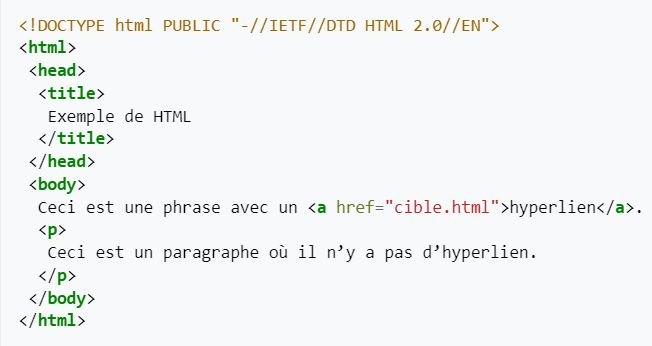

Hypertext Markup Language (.htlm)
Le HyperText Markup Language, généralement abrégé HTML ou, dans sa dernière version, HTML5, est le langage de balisage conçu pour représenter les pages web. Ce langage permet d’écrire de l’hypertexte (d’où son nom), de structurer sémantiquement une page web, de mettre en forme du contenu, de créer des formulaires de saisie ou encore d’inclure des ressources multimédias dont des images, des vidéos, et des programmes informatiques. Le HTML offre également la possibilité de créer des documents interopérables avec des équipements très variés et conformément aux exigences de l’accessibilité du web. Il est souvent utilisé conjointement avec le langage de programmation JavaScript et des feuilles de style en cascade (CSS). HTML est inspiré du Standard Generalized Markup Language (SGML). Il s'agit d'un format ouvert.

Dénominations
L’anglais « Hypertext Markup Language » se traduit littéralement en « langage de balisage d’hypertexte »1. On utilise généralement le sigle « HTML », parfois même en répétant le mot « langage » comme dans « langage HTML ». Hypertext est parfois écrit HyperText pour marquer le T du sigle HTML. Le public non averti parle parfois de HTM au lieu de HTML, HTM étant l’extension de nom de fichier tronquée à trois lettres, une limitation que l’on trouve sur d’anciens systèmes d’exploitation de Microsoft.

Exemple